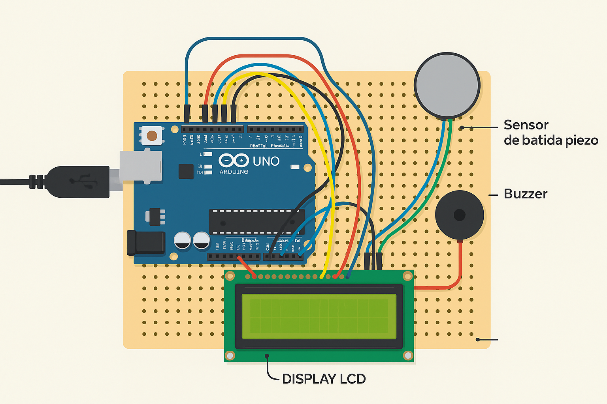

Projeto LAJE’S
Medidor de Força de Peteleco - Flick Force 💥
Descrição do Projeto
💡 Motivação
Demonstrar como a tecnologia pode transformar uma brincadeira simples em uma ferramenta de aprendizado e curiosidade científica.
🎯 Objetivo
Criar um sistema interativo capaz de medir a força de um peteleco, unindo conceitos de interação física e eletrônica digital.
🌍 Contextualização
Inserido nas áreas de eletrônica e educação, o projeto visa tornar o estudo de grandezas físicas (impacto) mais acessível e divertido.
🧩 Esquema Conceitual
Conexão lógica entre os componentes do artefato:
